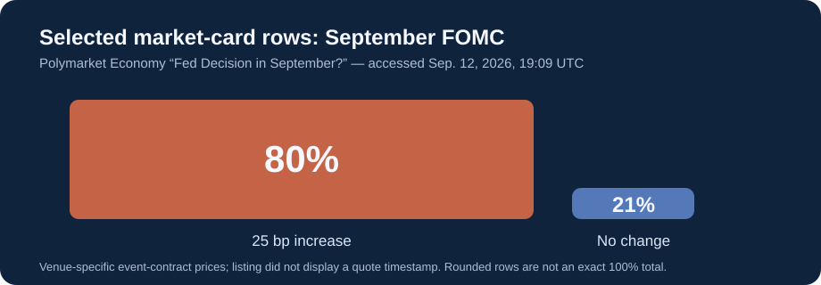

Fed Decision Watch
Late check: the hike row is 63%; CPI is next.
For the FOMC meeting on September 15–16, 2026, the directly inspected Polymarket contract displayed 63% for a 25-basis-point increase and 37% for no change. These are venue-specific event-contract prices, not a Federal Reserve forecast.
Prediction market
63% · 25 bp increase
37% · no change
Polymarket contract. It resolves on the change in the upper bound of the target range, using the FOMC statement as its named resolution source.
Futures-implied check
Not captured
CME FedWatch is a 30-Day Fed Funds futures-implied measure. Its page exposes an embedded grid, but direct access to that grid returned an access-denied error in this check, so no percentage is shown beside the contract price.

What changed and what is next
- Sep. 10 · releasedBLS August PPI: final demand +0.4% in August; +5.4% over 12 months
- Sep. 11 · 08:30 ETBLS Consumer Price Index for August
- Sep. 16 · 14:00 ETFOMC statement; 14:30 ET press conference
PPI: BLS August release. Dates: BLS September schedule and FOMC calendar. A sequence or a scheduled event is not proof of what moved a price.